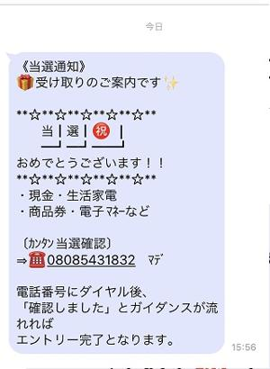
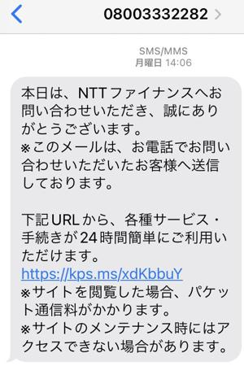

うるがいの話 ある日
最新: セキュリティ対策をする【うるがいの話 ある日】とは 一日だけのプログです
『うるがいの話』の最新一日だけのプログで、通信料が少なく経済的だ。カニの画像をクリックすると全ての日付が載る『うるがいの話』サイトを表示します
|
|
【うるがいの話】 うるがい(ｳﾙｶﾞｲ urugai)とは、『もずくがに』の名前でとても大きくなります。 |
|---|---|
|
|
【カミマヤーの話】 猫のことを方言でマヤーといいます。カミマヤー（kamimayaa）とは、神の猫のことです。 |
|
【たながぁの音楽】 たながぁ（ﾀﾅｶﾞｰ tanagaa）とは手長えびのことで、何種類かあり大きいのは車 エビぐらいになります。 |

|
【ぶながぁの話】 ぶながぁ(ﾌﾞﾅｶﾞｰ bunagaa)とは、赤い髪の毛、赤い身体、そして身長は１ｍ２０ｃｍ ぐらい、川の蟹を食べているの目撃された。場所は沖縄県国頭郡大宜味村のと ある村僕の隣近所に住んでいる爺さんから、聞いた話です。 |
|
|
【ギーマの話】 ギーマ(giima)とは、山原の里山に咲くスズランに似た、 花を付けます。実は食べられます、 気が付くと口の周りが紫になっています。 |
2022年10月06日 (木）セキュリティ対策をする
16:45
 
開くな危険！ 07023109364 070-2310-9364 迷惑メール
スマホにマカフィーのセキュリティアプリをインスートルする。スマホの操作
が、ダサいのでかなり時間がかかったが。ＮＴＴに再び電話をかけ、詐欺ＳＭ
Ｓに貼り付けたリンクを押してしまった出来事を話す。いまさらだけと、私の
応対したタケダさんと、その時のやり取りを確認し合った。ＮＴＴがイントロ
で、『抽選で２５０名に２千円の電子マネーが当たるとキャンペーンがいる方
はＳＭＳをお送りいたします。』、そして応対してくれた、タケダさんが最後
に『弊社から案内のＳＭＳを送ります』と２度もＳＭＳを送りますと・・・。
確認の結果から、タケダさんのＳＭＳが届いた２時間後の詐欺メールが届いて
いた。今日すでに、２件の迷惑メールが届いている。あー、その筋の人と自負
していたのに、オヨ。
１６時３６分 ビットコインの総資産 ￥８、４５８↑